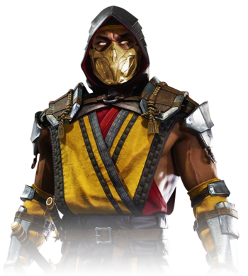

It is known that his father, a former member of the Shirai Ryu, forbade his son from joining the clan,
as he did not wish for his son to live the life of an assassin. However, Hanzo joined in spite of his
father's wishes in order to provide his wife and son with a comfortable life.
Now Scorpion is a hell-spawned spectre, inexorably seeking vengeance against those responsible for the destruction of his clan and the death of his own family. Despite his malevolent appearance, he is not inherently evil. He joins the forces of evil when promised a means of resurrecting his clan on Earth, or the chance to inflict his wrath against those who butchered them. Scorpion has also (indirectly) assisted the game's protagonists to fulfill these motives.
Scorpion is perceived by fans as the title's foremost anti-hero. He undertakes actions that benefit the forces of good, albeit in his own gruesome and vigilante manner. His attitude, appearance and self-reliance have all contributed to his popularity. Compared to the purely virtuous "good guys", and the diabolically evil "bad guys", Scorpion's moral neutrality is unique. Although he is featured alongside the forces of evil in the opening scene of Mortal Kombat: Armageddon, he remains neutral because of his fierce hatred of Quan Chi.
Scorpion appears human when masked, though this is merely an illusion. Only his skull remains when in his true form, sometimes ablaze. However, he can fully regain his human appearance if he conquers his own demons. Scorpion's most popular and recognized skill is his famous spear attack, which is used to draw an opponent toward him. This attack will also stun the opponent for a short amount of time. Scorpion will shout, "Get over here!" or "Come here!", while executing this technique.
Although Scorpion is often strict and wrathful, at times he shows a caring side and is very honorable. In the original timeline, when he discovers the Sub-Zero in the second tournament isn't Bi-Han and in fact his more merciful brother, Scorpion vows to protect Kuai Liang instead for killing his kin. In the second timeline, Scorpion truly intended to spare the first Sub-Zero in exchange for the resurrection of his clan, but Quan Chi prevented this. Most notably, in the Mortal Kombat X comic series, it's shown he took in victims and survivors of the Netherrealm War into his iteration of the Shirai Ryu to now protect Earthrealm while also raising Takeda Takahashi. During this time, he treated Takeda like his own son, such as when he comforts Takeda after Fox's death.
Now Scorpion is a hell-spawned spectre, inexorably seeking vengeance against those responsible for the destruction of his clan and the death of his own family. Despite his malevolent appearance, he is not inherently evil. He joins the forces of evil when promised a means of resurrecting his clan on Earth, or the chance to inflict his wrath against those who butchered them. Scorpion has also (indirectly) assisted the game's protagonists to fulfill these motives.
Scorpion is perceived by fans as the title's foremost anti-hero. He undertakes actions that benefit the forces of good, albeit in his own gruesome and vigilante manner. His attitude, appearance and self-reliance have all contributed to his popularity. Compared to the purely virtuous "good guys", and the diabolically evil "bad guys", Scorpion's moral neutrality is unique. Although he is featured alongside the forces of evil in the opening scene of Mortal Kombat: Armageddon, he remains neutral because of his fierce hatred of Quan Chi.
Scorpion appears human when masked, though this is merely an illusion. Only his skull remains when in his true form, sometimes ablaze. However, he can fully regain his human appearance if he conquers his own demons. Scorpion's most popular and recognized skill is his famous spear attack, which is used to draw an opponent toward him. This attack will also stun the opponent for a short amount of time. Scorpion will shout, "Get over here!" or "Come here!", while executing this technique.
Although Scorpion is often strict and wrathful, at times he shows a caring side and is very honorable. In the original timeline, when he discovers the Sub-Zero in the second tournament isn't Bi-Han and in fact his more merciful brother, Scorpion vows to protect Kuai Liang instead for killing his kin. In the second timeline, Scorpion truly intended to spare the first Sub-Zero in exchange for the resurrection of his clan, but Quan Chi prevented this. Most notably, in the Mortal Kombat X comic series, it's shown he took in victims and survivors of the Netherrealm War into his iteration of the Shirai Ryu to now protect Earthrealm while also raising Takeda Takahashi. During this time, he treated Takeda like his own son, such as when he comforts Takeda after Fox's death.